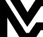

Todas com o mesmo layout: a frase e os três pontos da variação C em cima, a demonstração grande e ao centro da variação B por baixo. O que muda é o que acontece quando passas o rato pela placa. Todas correm sozinhas em ciclo e reagem ao rato.
Saem três anéis da placa que atravessam o espaço até ao telemóvel. Quando chegam, o ecrã pisca e a página de avaliação sobe de baixo. As estrelas acendem uma a uma. É a mais explicativa, mostra que alguma coisa viaja da placa para o telefone.

Passa o rato pela placa
O telemóvel inclina-se e aproxima-se fisicamente da placa, acende-se um brilho no ponto de contacto e só depois o ecrã muda. É a mais física e a que melhor imita o gesto real.
Passa o rato pela placa
Um traço de luz desenha-se da placa até ao telemóvel enquanto a placa ganha halo. Do outro lado o texto da avaliação escreve-se sozinho. É a mais premium e a mais discreta.
Passa o rato pela placa
Os três ecrãs comportam se como cartas empilhadas: cada um roda para cima e assenta, como as notificações do iPhone. É a mais suave e a que menos distrai quem está a ler o texto.
Passa o rato pela placa
Uma barra fina corre por baixo e o contador sobe de zero a nove enquanto os ecrãs mudam. Transforma a promessa "nove segundos" em algo que se vê acontecer. É a mais persuasiva.